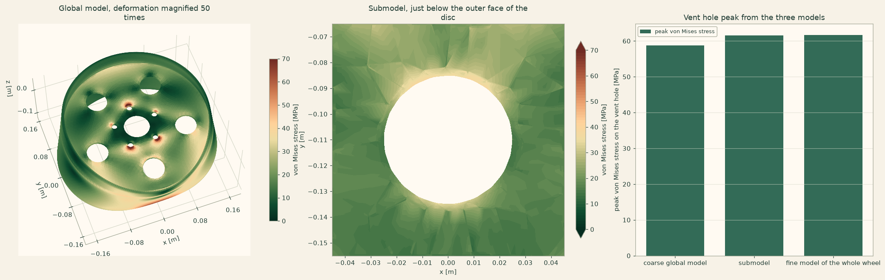
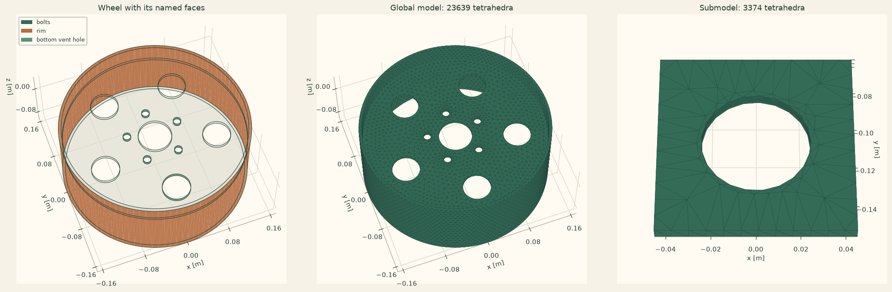

Docs › Examples › Submodel of a vent hole in a steel wheel
Linear elasticity · 3D
Submodel of a vent hole in a steel wheel
A pressed steel wheel bolted to the hub and loaded at the tyre contact patch, whose most loaded vent hole is resolved by a finely meshed submodel.
Run locally with OneSimulation. The example downloads are free. Running them requires an activated runtime. The current pilot runs on macOS on Apple Silicon with CPython 3.13. Installation and activation · View pilot plans. Scope of the reference checks.

What it computes
OneSimulation solves a coarse model of the whole wheel, then a separate fine model of the disc around the vent hole whose four cut faces take the coarse displacement as a boundary callback; a model of the whole wheel with the same fine hole mesh is the reference. The script that builds both STEP files comes with the notebook.
What it checks
The submodel gives a vent-hole peak of 61.59 MPa against 61.70 MPa from the fine model of the whole wheel (-0.18 %), while the coarse model alone underestimates it by 4.85 %; the bolt reactions balance the 5 kN wheel load to 0.06 %.
Geometry
The notebook starts at the import of the CAD files wheel_rim_submodel.step, wheel_rim_submodel_local.step: STEP (AP242), readable by any CAD program, with the names of the faces that the boundary conditions use. Put them next to the notebook.

The geometry script
The script wheel_rim_submodel_geometry.py builds the geometry with the CAD objects of OneSimulation and writes the files. Change a dimension there, run it, and run the notebook again.
"""Geometry of the OneSimulation example "Submodel of a vent hole in a steel wheel".
Builds a pressed steel wheel with the CAD objects of OneSimulation: a disc 6 mm thick and 336 mm in
diameter with a 60 mm bore, five bolt holes of 14 mm on a 100 mm circle and five vent holes of
50 mm on a 220 mm circle (one of them at the bottom), joined to a rim 340 mm in diameter, 5 mm
thick and 140 mm wide. The wheel axis is z. The whole wheel is written to wheel_rim_submodel.step
with the face groups bolts, rim (outer rim surface) and vent (the bottom vent hole). The submodel,
the part of the disc around the bottom vent hole (|x| <= 45 mm, -155 mm <= y <= -65 mm), is written
to wheel_rim_submodel_local.step with the face groups cut (the four cut planes) and vent.
"""
import numpy as np
from onesim.cad.d3 import AnnularCylinder, Box, Cylinder
disc = Cylinder(radius=0.168, length=0.006)
disc = disc.hole(0.060, at=(0.0, 0.0, 0.006))
for k in range(5):
bolt, vent = np.radians(-90 + 36 + 72 * k), np.radians(-90 + 72 * k)
disc = disc.hole(0.014, at=(0.050 * np.cos(bolt), 0.050 * np.sin(bolt), 0.006))
disc = disc.hole(0.050, at=(0.110 * np.cos(vent), 0.110 * np.sin(vent), 0.006))
wheel = disc | AnnularCylinder(
inner_radius=0.165, outer_radius=0.170, length=0.140, origin=(0.0, 0.0, -0.100)
)
bottom_vent = lambda part: part.select(
faces=lambda face: face.kind == "cylinder"
and abs(face.radius - 0.025) < 1e-9
and face.center[1] < -0.09
)
whole = wheel.grouped(
bolts=wheel.select(
faces=lambda face: face.kind == "cylinder" and abs(face.radius - 0.007) < 1e-9
),
rim=wheel.select(
faces=lambda face: face.kind == "cylinder" and abs(face.radius - 0.170) < 1e-9
),
vent=bottom_vent(wheel),
)
whole.save("wheel_rim_submodel.step")
local = wheel & Box(
length=0.090, width=0.090, height=0.030, origin=(-0.045, -0.155, -0.012)
)
local = local.grouped(
cut=local.select(
faces=lambda face: face.kind == "plane" and abs(face.normal[2]) < 0.5
),
vent=bottom_vent(local),
)
local.save("wheel_rim_submodel_local.step")The notebook
The complete notebook, cell by cell. Run it to produce the figures and the comparison printout.
The vent holes in the disc of a steel wheel are its fatigue-critical spots, but the wheel load enters through the rim and leaves through the bolts. Submodelling resolves the hole without meshing the whole wheel finely: a coarse model of the wheel carries loads and supports, and a fine model of the region around the hole is driven by the coarse displacement on its cut faces.
The wheel has a 6 mm disc of 336 mm diameter with a 60 mm bore, five bolt holes and five vent holes of 50 mm, and a rim 340 mm in diameter, 5 mm thick and 140 mm wide. The bolt holes are held fixed; the wheel load \(F=5\) kN acts upwards on the bottom of the rim, spread evenly over the contact patch of \(\pm20°\) around the bottom. One vent hole sits right above the contact patch.
| face | global model | submodel | |---|---|---| | bolts | \(\mathbf u=0\) | - | | rim, within \(\pm20°\) of the bottom | traction \(F/A_{patch}\ \mathbf e_y\) | - | | cut (four planes around the bottom vent hole) | - | displacement of the global model | | all other faces | free | free |
The wheel comes from the CAD file wheel_rim_submodel.step, the submodel region from wheel_rim_submodel_local.step; the script wheel_rim_submodel_geometry.py builds both with the CAD objects of OneSimulation.
Reference. A finely meshed model of the whole wheel gives the hole stress the submodel must reproduce, and the reactions at the bolts must balance the wheel load (R. D. Cook, D. S. Malkus, M. E. Plesha and R. J. Witt, Concepts and Applications of Finite Element Analysis, 4th ed., Wiley (2002), Sec. 9.12, submodelling).
import numpy as np
from onesim.cad.d2 import Plane
from onesim.cad.exchange import load
from onesim.materials import IsotropicSolid
from onesim.meshing import LocalRefinement, TetrahedralMesher
from onesim.numerics import Numerics
from onesim.numerics.fem import FiniteElement, Lagrange
from onesim.numerics.linear import SparseDirect
from onesim.physics.solid_mechanics import (
FixedDisplacement,
LinearElasticity,
Traction,
TractionFree,
)
from onesim.simulation import Problem, Simulation
from onesim.visualization import plots, theme
theme.set()Geometry and meshes
Quadratic tetrahedra: the coarse wheel mesh has 8 mm cells everywhere, also on the vent hole; the submodel and the fine reference model have 1 mm cells on the bottom vent hole.
wheel, local = load("wheel_rim_submodel.step"), load("wheel_rim_submodel_local.step")
faces, cut_faces = wheel.boundaries, local.boundaries
mesh_on = lambda part, vent, size: TetrahedralMesher(
target_size=0.008, refinements=(LocalRefinement(region=vent, target_size=size),)
).generate(part)
coarse, fine, detail = (
mesh_on(wheel, faces.vent, 0.008),
mesh_on(wheel, faces.vent, 0.001),
mesh_on(local, cut_faces.vent, 0.001),
)
view = plots.Camera(elevation=60, azimuth=-110)
fig = plots.figure(1, 3, size=(19, 6))
plots.geometry(
wheel,
selection={"bolts": faces.bolts, "rim": faces.rim, "bottom vent hole": faces.vent},
labels=False,
camera=view,
title="Wheel with its named faces",
ax=fig[0],
)
plots.mesh(
coarse,
groups=("all",),
legend=False,
camera=view,
title=f"Global model: {coarse.cell_count} tetrahedra",
ax=fig[1],
)
plots.mesh(
detail,
groups=("all",),
legend=False,
camera=plots.Camera(elevation=60, azimuth=-90),
title=f"Submodel: {detail.cell_count} tetrahedra",
ax=fig[2],
)
plots.show()Global model and reference
force, rim_radius, half_patch, width = 5000.0, 0.170, np.radians(20.0), 0.140
pressure = force / (2 * half_patch * rim_radius * width)
steel = IsotropicSolid(
density=7850.0,
specific_heat_capacity=460.0,
thermal_conductivity=50.0,
youngs_modulus=210e9,
poisson_ratio=0.3,
thermal_expansion_coefficient=12e-6,
)
numerics = Numerics(
spatial=FiniteElement(element=Lagrange(order=2)), linear_solver=SparseDirect()
)
model = LinearElasticity(domain=wheel.volume, material=steel)
problem = Problem(
name="Steel wheel",
geometry=wheel,
physics=(model,),
boundary_conditions=(
FixedDisplacement(boundary=faces.bolts, physics=model, value=(0.0, 0.0, 0.0)),
Traction(
boundary=faces.rim,
physics=model,
value=lambda x, y, z: np.stack(
(
0 * y,
np.where(y < -rim_radius * np.cos(half_patch), pressure, 0.0),
0 * y,
),
axis=-1,
),
),
TractionFree(boundary=faces.all - faces.bolts - faces.rim, physics=model),
),
)
global_result, reference_result = (
Simulation(problem=problem, mesh=mesh, numerics=numerics).solve_stationary()
for mesh in (coarse, fine)
)
global_displacement = global_result.field(model.displacement)Submodel
The four cut faces of the submodel take the displacement of the coarse wheel model, evaluated at their own nodes.
sub = LinearElasticity(domain=local.volume, material=steel)
submodel = Simulation(
problem=Problem(
name="Vent hole submodel",
geometry=local,
physics=(sub,),
boundary_conditions=(
FixedDisplacement(
boundary=cut_faces.cut,
physics=sub,
value=lambda x, y, z: global_displacement.evaluate(
np.column_stack((x, y, z))
),
),
TractionFree(boundary=cut_faces.all - cut_faces.cut, physics=sub),
),
),
mesh=detail,
numerics=numerics,
).solve_stationary()Results
The peak von Mises stress on the bottom vent hole from the three models and the balance of the bolt reactions with the wheel load.
peaks = {
name: result.field(physics.von_mises_stress)
.sample(along=vent, subdivisions=4)
.values.max()
for name, result, physics, vent in (
("coarse global model", global_result, model, faces.vent),
("submodel", submodel, sub, cut_faces.vent),
("fine model of the whole wheel", reference_result, model, faces.vent),
)
}
for name, peak in peaks.items():
print(f"{name:30s} peak von Mises stress on the vent hole {peak / 1e6:7.2f} MPa")
print(
f"submodel against the fine model of the whole wheel: {100 * (peaks['submodel'] / peaks['fine model of the whole wheel'] - 1):+.2f} %, "
f"coarse model {100 * (peaks['coarse global model'] / peaks['fine model of the whole wheel'] - 1):+.2f} %"
)
print(
f"bolt reactions: {abs(global_displacement.reaction(faces.bolts)[1]):.1f} N against the wheel load {force:.0f} N "
f"(the contact patch is resolved by the facets of the rim)"
)Figure
The von Mises stress on the deformed wheel, in the disc around the bottom vent hole from the submodel (just below the outer face, where the bending stress peaks), and the three hole peaks.
megapascal = lambda s, position: s / 1e6
fig = plots.figure(1, 3, size=(19, 6))
plots.surface(
global_result.field(model.von_mises_stress),
component=megapascal,
deformation=global_displacement,
deformation_scale=50.0,
limits=(0, 70),
camera=view,
label="von Mises stress [MPa]",
title="Global model, deformation magnified 50 times",
ax=fig[0],
)
plots.section(
submodel.field(sub.von_mises_stress),
plane=Plane(origin=(0, 0, 0.0055), normal=(0, 0, 1)),
component=megapascal,
limits=(0, 70),
subdivisions=3,
label="von Mises stress [MPa]",
title="Submodel, just below the outer face of the disc",
ax=fig[1],
)
plots.bars(
list(peaks),
{"peak von Mises stress": [peak / 1e6 for peak in peaks.values()]},
ylabel="peak von Mises stress on the vent hole [MPa]",
title="Vent hole peak from the three models",
ax=fig[2],
)
plots.show()Going further
Add a lateral cornering force on the rim, round the vent hole edges in the submodel only, or feed the submodel stress into fatigue_cycles for a rotating wheel, where each vent hole passes the contact patch once per revolution.